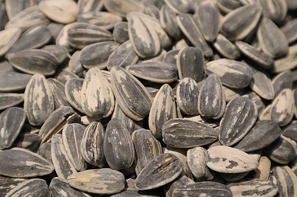
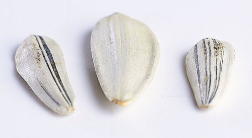
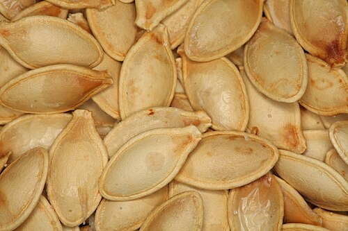
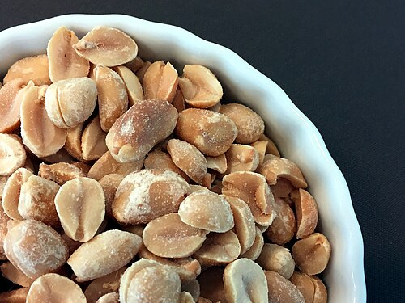
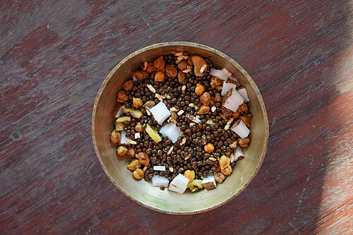
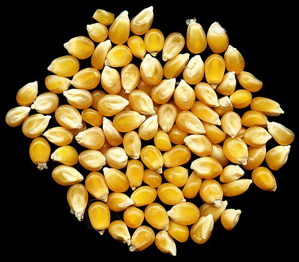

شفافية في مصادر الصور
صور المحاصيل ومصادرها
نوضح هنا أصحاب الصور وتراخيص استخدامها. اضغط على اسم الصورة لزيارة صفحتها الأصلية.
الصور للعرض التوضيحي لنوع المحصول. قد يختلف شكلها عن المنتج الفعلي أو درجة تحميصه، لذلك لا تُستخدم كصورة للعبوة.




حمص محمص
الصورة: Maah korai — NabaJyoti
الصورة توضيحية؛ الطبق قد يحتوي على مكونات إضافية.